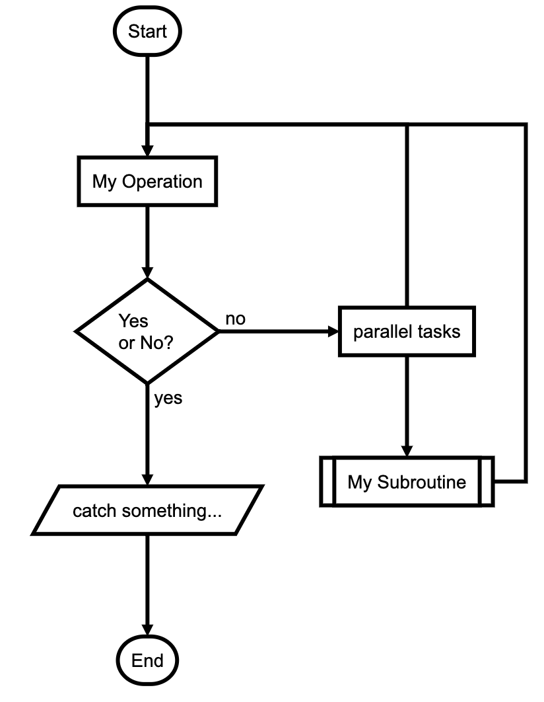

flowchart.js
flowchart.js- 概述：一个js库，可以用来画流程图
- 主页
- flowchart.js
- GitHub
- adrai/flowchart.js: Draws simple SVG flow chart diagrams from textual representation of the diagram
举例
代码
st=>start: Start:>http://www.google.com[blank] e=>end:>http://www.google.com op1=>operation: My Operation sub1=>subroutine: My Subroutine cond=>condition: Yes or No?:>http://www.google.com io=>inputoutput: catch something... para=>parallel: parallel tasks st->op1->cond cond(yes)->io->e cond(no)->para para(path1, bottom)->sub1(right)->op1 para(path2, top)->op1- 效果
- 